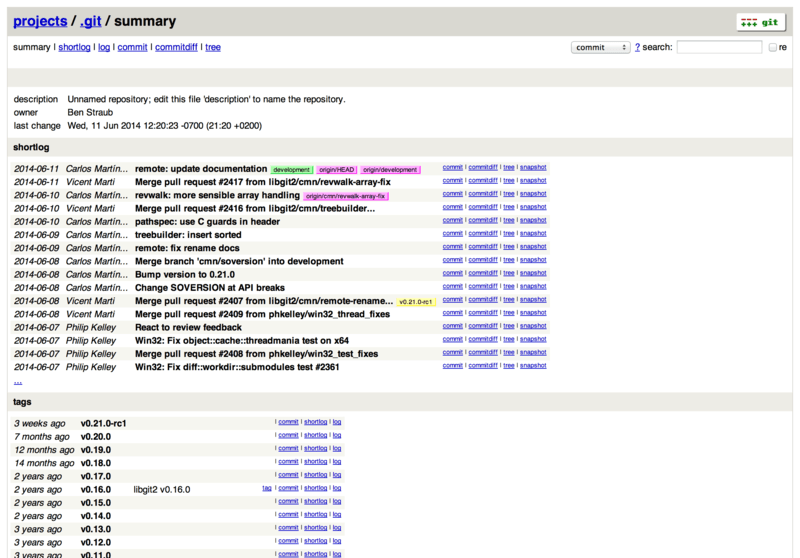

٤، ٧، GitWeb
لأنك الآن تستطيع الوصول إلى مشروعك مع إذن التحرير أو مع إذن القراءة فقط. فقد تود إعداد واجهة وب رسومية صغيرة له. إن مع جت بُريْمج CGI يسمى جتوِب، ويُستخدم أحيانًا لهذا الغرض.

فإذا أردت رؤية كيف يبدو جتوب لمشروعك، فمع جت أمر يشغّل نسخة مؤقتة منه إذا كان لديك خادوم وب خفيف على نظامك مثل lighttpd أو webrick.
على الأنظمة اللينكسية غالبًا يكون lighttpd مثبتًا، فقد تستطيع تشغيله بتنفيذ git instaweb في مجلد مشروعك.
وإن كنت على ماك، فإن نسخة Leopard تأتي بلغة Ruby مثبتة مبدئيًّا، فيكون webrick هو الظن الأقرب.
لـبَدء instaweb بشيء غير lighttpd عليك تشغيله بخيار --httpd.
$ git instaweb --httpd=webrick
[2009-02-21 10:02:21] INFO WEBrick 1.3.1
[2009-02-21 10:02:21] INFO ruby 1.8.6 (2008-03-03) [universal-darwin9.0]هذا يشغّل خادوم HTTPD على منفذ 1234 ويفتح متصفح الوب على تلك الصفحة آليًّا.
فهو يسهّل عليك.
وعندما تقضي ما تريد وتود إيقافه، نفّذ الأمر نفسه لكن بالخيار --stop:
$ git instaweb --httpd=webrick --stopوإذا كنت تود تشغيل واجهة الوب على خادوم طوال الوقت لفريقك أو لمشروع مفتوح تستضيفه، فستحتاج إلى إعداد بريمج الـ CGI ليقدّمه خادوم الوب العادي الذي تستخدمه.
بعض توزيعات لينكس تأتي بحزمة gitweb التي قد تستطيع تثبيتها بأمر مثل apt أو dnf، لذا فقد تود تجربة هذا أولًا.
سنتناول بإيجاز كبير تثبيت جتوب يدويًّا.
عليك أولًا الحصول على مصدر جت، الذي فيه جتوب، ثم توليد بُرَيمج CGI المخصص:
$ git clone https://git.kernel.org/pub/scm/git/git.git
$ cd git/
$ make GITWEB_PROJECTROOT="/srv/git" prefix=/usr gitweb
SUBDIR gitweb
SUBDIR ../
make[2]: `GIT-VERSION-FILE' is up to date.
GEN gitweb.cgi
GEN static/gitweb.js
$ sudo cp -Rf gitweb /var/www/لاحظ أنك تحتاج إلى إخبار هذا الأمر بمكان مستودعاتك في المتغير GITWEB_PROJECTROOT.
والآن، تحتاج إلى جعل أباتشي يستخدم CGI لهذا البريمج، ويمكنك فعل ذلك بإضافة مستضيف وهمي له:
<VirtualHost *:80>
ServerName gitserver
DocumentRoot /var/www/gitweb
<Directory /var/www/gitweb>
Options +ExecCGI +FollowSymLinks +SymLinksIfOwnerMatch
AllowOverride All
order allow,deny
Allow from all
AddHandler cgi-script cgi
DirectoryIndex gitweb.cgi
</Directory>
</VirtualHost>نكرر: يمكن تقديم جتوب عبر أي خادوم وب يتيح CGI أو Perl. فإذا أردت شيئًا آخر فليس إعداده بالصعب.
يمكنك الآن زيارة http://gitserver/ لرؤية مستودعاتك على الشبكة.